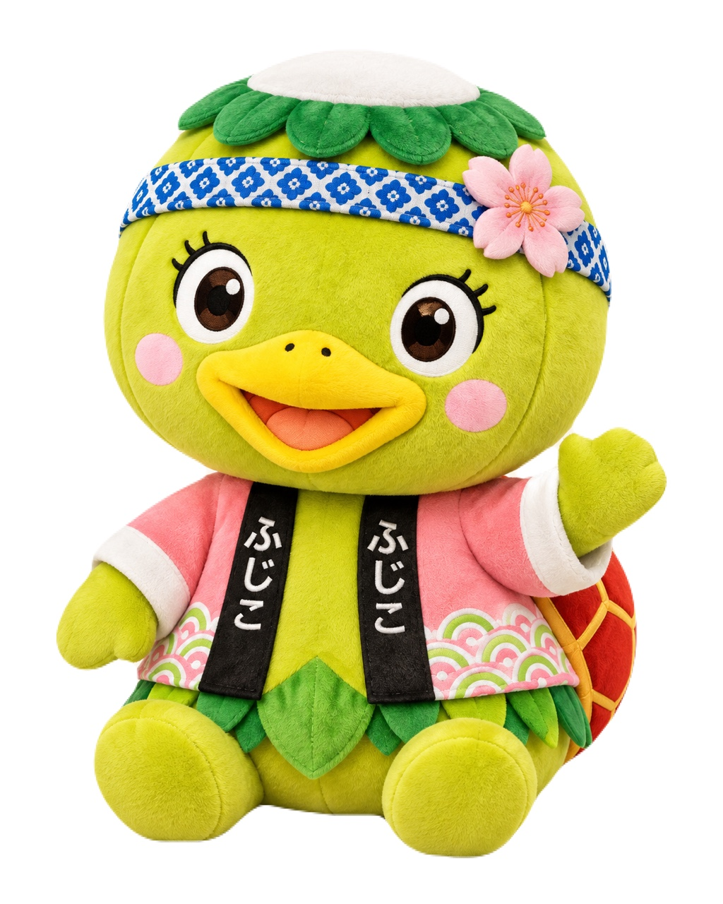
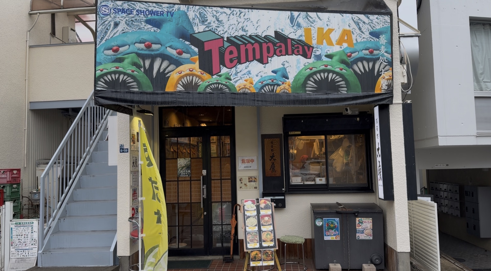

手打ち蕎麦・うどん・日本酒
蕎麦処 大鷹
志木で受け継がれる、町の手打ち蕎麦。

ふじこが志木のお店をご紹介します。
志木市幸町の手打ち蕎麦店。志木で親しまれた「伊勢源」直伝の蕎麦を受け継ぎ、蕎麦・うどんや一品料理を提供しています。

手打ち蕎麦・うどん・日本酒
志木で受け継がれる、町の手打ち蕎麦。

ふじこが志木のお店をご紹介します。
志木市幸町の手打ち蕎麦店。志木で親しまれた「伊勢源」直伝の蕎麦を受け継ぎ、蕎麦・うどんや一品料理を提供しています。
本町で長年親しまれた蕎麦店「伊勢源」の味を受け継ぐお店です。手打ち蕎麦を中心に、うどんや一品料理、お酒も楽しめます。
いろは商店会の公式店舗一覧では正会員として紹介され、合同市にも参加しています。2024年にはバンド「Tempalay」とのコラボ企画も行われました。
実際のお店の写真や動画を、掲載元のページでご覧いただけます。
📷 外観・店内・料理の写真を見る訪問記事「とある埼玉県民のゆるい日常」／2026年9月17日公開。入口や店内、蕎麦・カレーを紹介しています。 ▶ 店内や料理を動画で見る訪問者による紹介動画です。駅からお店へ歩く様子も見られます。 🎵 Tempalayとのコラボを見る2024年の企画を紹介した号外NETの記事です。現在開催中のイベントではありません。手打ち蕎麦・うどん・だし巻き卵などの一品料理。提供メニューはお店の最新情報をご覧ください。
公開情報をもとにした紹介です。店舗による掲載内容の確認前です。
紹介内容の確認日：2026年11月18日